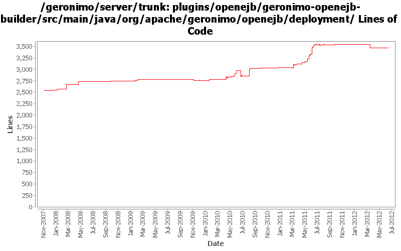

[root]/plugins/openejb/geronimo-openejb-builder/src/main/java/org/apache/geronimo/openejb/deployment

| Author | Changes | Lines of Code | Lines per Change |
|---|---|---|---|
| Totals | 206 (100.0%) | 2911 (100.0%) | 14.1 |
| djencks | 70 (34.0%) | 1342 (46.1%) | 19.1 |
| genspring | 47 (22.8%) | 778 (26.7%) | 16.5 |
| xuhaihong | 33 (16.0%) | 427 (14.7%) | 12.9 |
| gawor | 21 (10.2%) | 134 (4.6%) | 6.3 |
| gdamour | 9 (4.4%) | 107 (3.7%) | 11.8 |
| dblevins | 14 (6.8%) | 71 (2.4%) | 5.0 |
| rickmcguire | 3 (1.5%) | 35 (1.2%) | 11.6 |
| jdillon | 4 (1.9%) | 8 (0.3%) | 2.0 |
| manugeorge | 1 (0.5%) | 5 (0.2%) | 5.0 |
| rwonly | 1 (0.5%) | 3 (0.1%) | 3.0 |
| jbohn | 3 (1.5%) | 1 (0.0%) | 0.3 |
GERONIMO-6364 jaxws-catalog-tests test failed for UnknownHostExceptiion
Since Geronimo installs the whole ear as one bundle now, there may be issues while reading wsdl and jax-ws-catalog.xml file. Now the solution is that,
for WAR in EAR, as the WAR will be extracted, we will add the module directory prefix for those files, so that bundle.getEntry could work.
for EJB in EAR, the url will be something like ejb.jar!/META-INF/a.wsdl, we will try to build a jar URL to get the resource, one thing that needs to improve is that, this kind of URL will cause a full copy of the target jar file, as JarURLHandler may not recognize the bundleentry protocol.
0 lines of code changed in 1 file:
GERONIMO-6302 fix up ejb-ref handling
5 lines of code changed in 1 file:
GERONIMO-5956 issues when deploy a standalone ejb web services #2 (thanks Xiao Yi for the patch!)
3 lines of code changed in 1 file:
GERONIMO-6180 Remove persistence reference information from AppInfo, EJB builder should not process them
8 lines of code changed in 1 file:
Update codes due to getInjectionTargets return value type changed to Set
7 lines of code changed in 1 file:
GERONIMO-6143 Create a fragment context for each sub modules in the EAR package
75 lines of code changed in 1 file:
GEROGRONIMO-6016 Geronimo can't handle well when modules in ear has the same name.
Only rename the module when there are more than 2 modules in ear.
1 lines of code changed in 1 file:
the openejb side JndiConsumer api changed again.
0 lines of code changed in 1 file:
Openejb added a method for interface JndiConsumer.
11 lines of code changed in 1 file:
Fix a mistaken in last commit, use full name to search the injection map
2 lines of code changed in 1 file:
Check jndi reference whether exists first to avoid overwriting the existing referece.
35 lines of code changed in 1 file:
GERONIMO-5050 earData is null when there's no ejb in ear but there's ejb ref pointing to ejbs defined in other application. We should handle this situation but not just skip.
5 lines of code changed in 1 file:
GERONIMO-5050 really use only one owb context for the whole ear, and combine all the module info into it
44 lines of code changed in 4 files:
GERONIMO-5050 Continue integrating use of openejb owb integration
1 lines of code changed in 1 file:
GERONIMO-6043 gbean reordering so initorder can work
16 lines of code changed in 2 files:
GERONIMO-5050 Start of always using openejb for owb
1 lines of code changed in 1 file:
Now global jndi will be handled in RootContext. We only need to convert and copy app scope ejb ref to appclient app context.
3 lines of code changed in 1 file:
GERONIMO-6022 Support use the @Resource(name="java:global/env/abc") for environment entry injection
15 lines of code changed in 1 file:
GERONIMO-6018 Geronimo does not support @ManagedBean defined in app client module.
1, added a openejb-client module to only contain openejb system and managed container.
2, add a ClientEJBBuiler so that client-deployer could use it to build @ManagedBean in app client module.
3, updated EJBModuleBuilder and AppClientModuleBuilder to do the ejb in clientmodule deployment work.
16 lines of code changed in 1 file:
GERONIMO-6016 Geronimo can't handle well when modules in ear has the same name.
10 lines of code changed in 1 file:
GERONIMO-6015 JACC PolicyContextID conflicts,
use moduleURI as policyID because openejb side is using moduleURI too with changes in OPENEJB-1442.
1 lines of code changed in 1 file:
GERONIMO-6015 JACC PolicyContextID conflicts, keep moduleId as plicyContextId for now.
10 lines of code changed in 2 files:
GERONIMO-6016 Geronimo can't handle well when modules in ear has the same name.this change is to :1, use moduileURI as ejbmodules and ejbInfos key to avoid conflict.2, rename a module name when there's existing same module name binding.
18 lines of code changed in 1 file:
appName might have been empty string already.
1 lines of code changed in 1 file:
To always add localbean view for ManagedBean.
3 lines of code changed in 1 file:
GERONIMO-6016 Geronimo can't handle well when modules in ear has the same name.
this change is to eeduce the chance of policy id conflict because of the module name conflict.
2 lines of code changed in 1 file:
GERONIMO-6008 use openejb remote jndi system in client container to do global jndi lookup.
see OPENEJB-1596 for openejb side changes.
36 lines of code changed in 2 files:
to populate the correct isStandalone attribute from ejbmodule to openejb appinfo.
1 lines of code changed in 1 file:
David Jencks' workaround for not re-initializing the OWB context in the servlet side of things when there is one in the app
10 lines of code changed in 1 file:
adding the new environment element copying logic in environment handling logic of ejb builder.
8 lines of code changed in 1 file:
OPENEJB-1572 The home ref does not get binded with home and localHome style jndi name.
Use correct interfacetype for home ref binding.
2 lines of code changed in 1 file:
re-enable the message-destination handling logic for spec and vendor DD.
135 lines of code changed in 1 file:
Just use wink and openejb-builder as an exercise to use findbug in my IDE.
6 lines of code changed in 2 files:
GERONIMO-5995 Provide a way to customize ejb in geornimo-web.xml, keep same the module structure to geronimo-application.xsd so that it's easier to extend in the future.
16 lines of code changed in 1 file:
When the war itself is a ejbmodule and the war is standalone, the corresponding ejbmodule should be standalone too.
11 lines of code changed in 1 file:
Openejb side api changes.
1 lines of code changed in 1 file:
OPENEJB-1322 BundleFinderFactory needs a better way to filter scans
As client, geronimo needs to set the ejb module standalone state.
1 lines of code changed in 1 file:
EJB31 spec EE.8.2.1 :
A JAR format file (such as a .jar file, .war file, or .rar file) may reference a
.jar file or directory by naming the referenced .jar file or directory in a
Class-Path header in the referencing JAR file’s Manifest file
9 lines of code changed in 1 file:
GERONIMO-5984 Deployment failed when java ee application module has reference to another util lib which is packaged in the EAR as well
1, add ejb classpath to ear bundle classpath.
2, Move manifestcp generation logic above the code that is depending on it.
19 lines of code changed in 1 file:
To add the AppName in the ejb's global JNDI name only when the ejb module is part of an ear.
16 lines of code changed in 1 file:
(110 more)